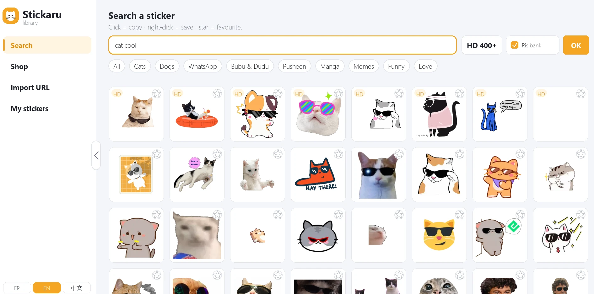
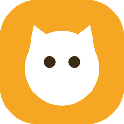

StickaruA Windows sticker and meme library: keyless search (Tenor, GIPHY, Telegram, RisiBank), one-click copy with transparency, favourites and a flying cat on your desktop. Handy for slideshows: paste transparent stickers and animated GIFs straight into PowerPoint or Google Slides.
Une bibliothèque de stickers et de mèmes pour Windows : recherche sans clé API, copie en un clic avec transparence, favoris et un chat volant sur le bureau. Pratique pour les diaporamas : collez des stickers transparents et des GIF animés directement dans PowerPoint ou Google Slides.
Download the installerTélécharger l'installateur